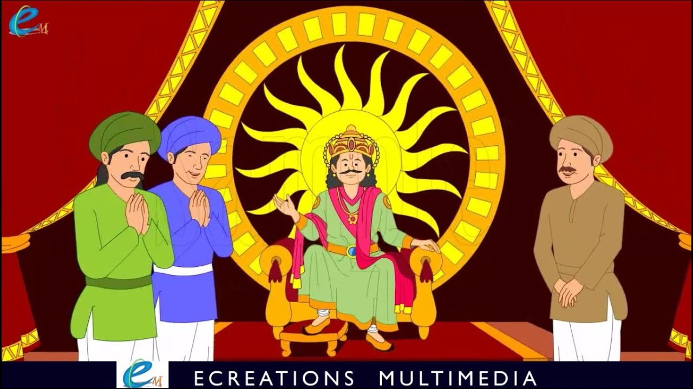

"જ્યારે તેઓ વિકેટની નજીક પહોંચ્યા, ત્યારે મંત્રીનો પુત્ર બહાર જ ઊભો રહ્યો, અને તે (રાજકુમાર) વિકેટમાં પ્રવેશ્યો. તે શું સમજે છે, પણ રાજકુમારી પણ ત્યાં તેની રાહ જોતી ઊભી હતી!" આમ તેમની આંખો મળી. પછી રાજકુમારી હસ્યો, અને, વિકેટ બંધ કરીને, રાજકુમારને તેની સાથે ઉત્સવની ચેમ્બરમાં લઈ ગયો. ત્યાં પહોંચ્યો, રાજકુમાર બેહેજડ રૂમના જુદા જુદા ભાગોમાં અત્તરથી ભરેલા સેન્સર, અને વિવિધ રંગોના વસ્ત્રોમાં સજ્જ કન્યાઓ હાથ જોડીને આદરપૂર્વક ઉભી હતી. , દરેક તેના સ્ટેશન મુજબ; એક બાજુ ફૂલોનો પલંગ; એટીઆર-હોલ્ડર્સ, પાન-બોક્સ, ગુલાબ-પાણીની બોટલ, ટ્રે અને ચાર-પાર્ટીશનવાળા બોક્સ ક્રમમાં ગોઠવાયેલા; બીજી બાજુ, કમ્પાઉન્ડ એસેન્સ, તૈયાર ચંદન-લાકડું ધાતુના કપમાં મિશ્રિત અત્તર, કસ્તુરી અને કેસર ભરેલા છે; અહીં, ઉત્કૃષ્ટ મીઠાઈઓના રંગીન બોક્સ મૂકવામાં આવ્યા છે; ત્યાં, વિવિધ પ્રકારની મીઠાઈઓ ક્રમમાં મૂકવામાં આવી છે; તમામ દરવાજા અને દિવાલો ચિત્રો અને ચિત્રોથી શણગારેલા છે, અને આવા ચહેરાઓ ધરાવે છે, જોનાર દરેક એકને જોઈને મંત્રમુગ્ધ થઈ જશે. ટૂંકમાં, આનંદ અને આનંદમાં ફાળો આપી શકે તે બધું જ મળી ગયું. આખું દ્રશ્ય એક અસાધારણ પાત્ર હતું, જેનું કોઈ પર્યાપ્ત વર્ણન આપી શકાય તેમ નથી."
"આ એ જ એપાર્ટમેન્ટ હતું કે જ્યાં રાજકુમારી પદ્માવતીએ રાજકુમારને લઈ જઈને તેને બેસણું આપ્યું, અને તેના પગ ધોયા, અને તેના શરીર પર ચંદન લગાડ્યા, અને તેના ગળામાં ફૂલોનો હાર પહેર્યો, અને તેના પર ગુલાબજળ છાંટ્યું. તેને પોતાના હાથે પંખો મારવા લાગ્યો.એટલે રાજકુમારે કહ્યું, 'તને જોતાં જ હું તાજો થઈ ગયો છું, તું આટલી તકલીફ કેમ લે છે? આ નાજુક હાથ પંખાને સંભાળવા યોગ્ય નથી, મને આપો પંખો; તમે બેસો.' પદ્માવતીએ જવાબ આપ્યો, 'મહારાજ! તમે મારા ખાતર અહીં આવવા માટે ખૂબ જ મુશ્કેલીમાં મુકાયા છો, તમારી રાહ જોવી મને યોગ્ય લાગે છે.' પછી એક કન્યાએ રાજકુમારીના હાથમાંથી પંખો લીધો અને કહ્યું, 'આ મારો વ્યવસાય છે, હું તમારા પર હાજર રહીશ, અને તમે બંને આનંદ કરો.' તેઓએ સાથે મળીને સોપારી ખાવાનું શરૂ કર્યું, અને કૌટુંબિક વાર્તાલાપમાં જોડાવાનું શરૂ કર્યું, જ્યારે, આ સમય સુધીમાં, સવાર થઈ ગઈ. રાજકુમારીએ તેને છુપાવી દીધો; (અને) જ્યારે રાત પડી, ત્યારે તેઓ ફરીથી મનોરંજક આનંદમાં વ્યસ્ત થયા. આમ ઘણા દિવસો પસાર થયા. જ્યારે પણ રાજકુમાર વિદાય કરવાની ઈચ્છા બતાવે ત્યારે રાજકુમારી તેને પરવાનગી આપતી ન હતી. આમ એક મહિનો વીતી ગયો; પછી રાજકુમાર ખૂબ જ પરેશાન અને ખૂબ જ ચિંતિત થઈ ગયો."
"એકવાર એવું બન્યું કે તે રાત્રે એકલો બેસીને મનમાં આવું વિચારતો હતો કે, 'દેશ, સિંહાસન, કુટુંબ, બધું જ મારાથી અલગ થઈ ચૂક્યું હતું; પણ મારા જેવો મિત્ર, જેના વડે મને આ બધું સુખ મળ્યું. આખા મહિનાથી હું તેને મળ્યો નથી !તે તેના દિલમાં શું કહેતો હશે ?અને હું કેવી રીતે જાણું કે તેની સાથે શું થઈ રહ્યું હશે ?' તે આ બેચેન વિચારોમાં મગ્ન બેઠો હતો, એટલામાં રાજકુમારી પણ આવી પહોંચી, અને તેની દુર્દશા જોઈને પૂછવા લાગી, 'મહારાજ! તમને શું દુઃખ છે કે તમે અહીં આટલા નિરાશ બેઠા છો? મને કહો.' પછી તેણે કહ્યું, 'મારો એક ખૂબ જ પ્રિય મિત્ર છે, મંત્રીનો પુત્ર; આખા મહિનાથી મને તેનો કોઈ હિસાબ મળ્યો નથી: તે એટલો હોંશિયાર, વિદ્વાન મિત્ર છે કે તેની પ્રતિભા (એવું હતું કે) મેં મેળવ્યું. તું, અને તેણે (તે જ) તારા બધા રહસ્યો સમજાવ્યા.' રાજકુમારીએ કહ્યું, 'મહારાજ! તમારો આત્મા ખરેખર ત્યાં છે; તમે અહીં કયું સુખ માણી શકો છો? તેથી, આ શ્રેષ્ઠ છે, - હું મીઠાઈઓ અને મીઠાઈઓ અને તમામ પ્રકારના માંસ તૈયાર કરીશ, અને તે મોકલીશ; શું તમે પણ? , ત્યાં જઈને ભોજન કરો અને તેને સારી રીતે દિલાસો આપો અને તમારા મનથી આરામથી પાછા ફરો."
" આ સાંભળીને રાજકુમાર ઊભો થયો અને બહાર આવ્યો અને રાજકુમારીની પાસે વિવિધ પ્રકારની મીઠાઈઓ હતી, જેમાં ઝેર ભેળવીને, રાંધીને મોકલવામાં આવી હતી. મિઠાઈઓ આવી ત્યારે રાજકુમાર ગયો હતો અને મંત્રીના પુત્રની બાજુમાં બેસી ગયો હતો. મંત્રીના પુત્રએ પૂછ્યું, 'મહાન રાજા! આ મીઠાઈઓ અહીં કેવી રીતે આવી?' રાજકુમારે જવાબ આપ્યો, 'હું ત્યાં તમારા વિશે ચિંતિત બેઠો હતો, જ્યારે રાજકુમારી આવી, અને યુઇ તરફ જોઈને પૂછ્યું, 'તમે શા માટે નીચે બેસો છો? તેનું કારણ સમજાવો.' આના પર 1 તેણીને રહસ્યો વાંચવામાં તમારી કુશળતાનો સંપૂર્ણ હિસાબ આપ્યો.' આ અહેવાલ સાંભળીને, સ્લીએ તમારી પાસે આવવાની પરવાનગી આપી, અને તે તમારા માટે મોકલ્યા; જો તમે તેમાં ભાગ લેશો, તો મારું હૃદય પણ આનંદિત થશે.' ત્યારે મંત્રીના પુત્રે કહ્યું, 'તું મારા માટે ઝેર લાવ્યો છે, ખરેખર તેં તેં ખાધું નથી તે સારું છે. સાહેબ 1 મારી વાત સાંભળો, - સ્ત્રીને તેના પ્રેમીના મિત્ર પ્રત્યે કોઈ પ્રેમ નથી: તેં કર્યું. ત્યાં મારા નામનો ઉલ્લેખ કરવામાં સમજદારીથી કામ કરશો નહીં.' આ સાંભળીને રાજકુમારે કહ્યું, 'તમે એવી વાત કરો છો કે કોઈ ક્યારેય નહીં કરે: જો માણસને માણસનો ડર ન હોય, તો એવું માનવામાં આવે છે કે તે ઓછામાં ઓછો ભગવાનનો ડર રાખે છે.' "

| પેજ નંબર ૮ | ||